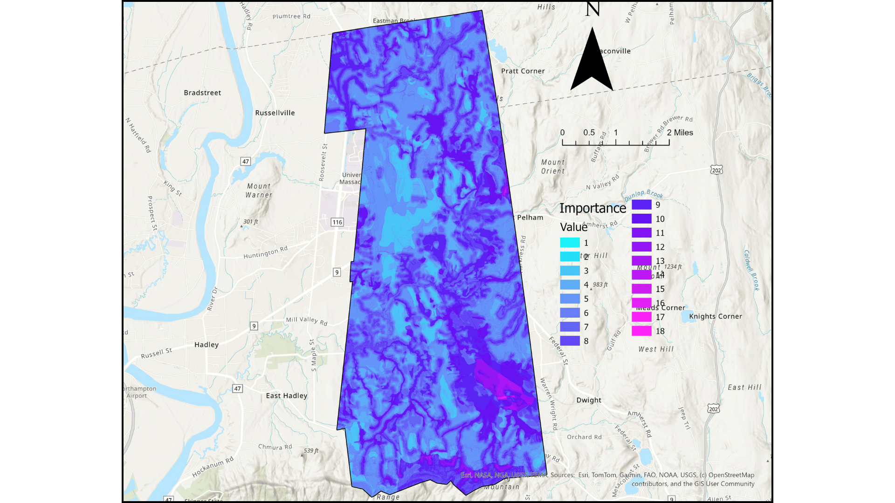
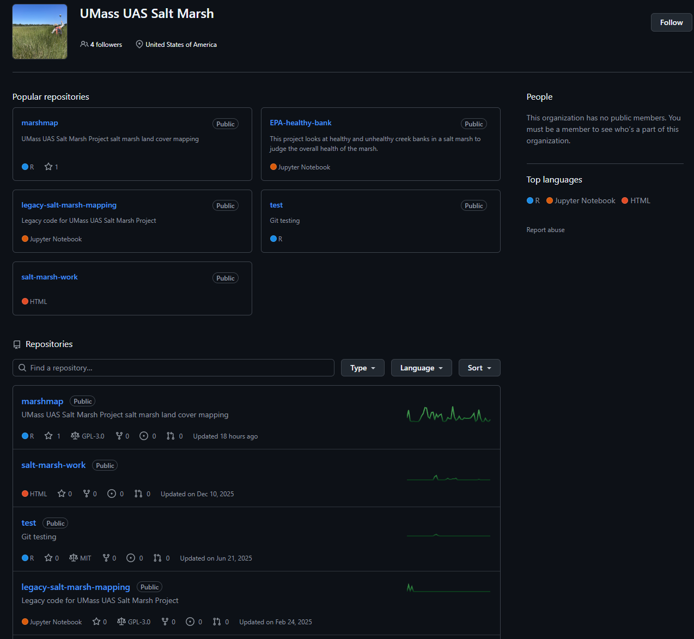
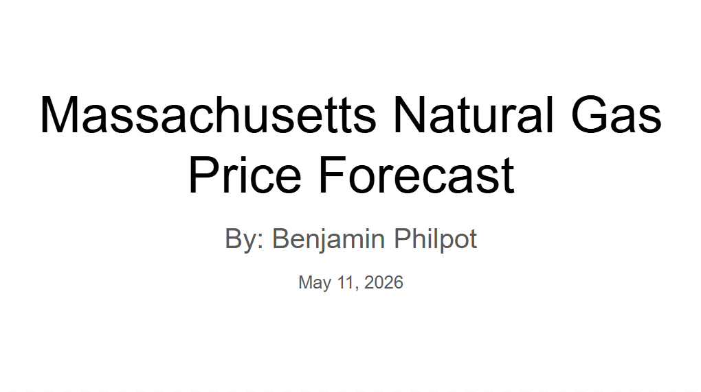

Master of Public Policy | B.A. Economics & B.S. Environmental Science
Here is a portfolio of projects I have completed throughout my time at UMass Amherst:
(click on any image below to access the project)
Fall 2025

Skills Developed: ArcGIS, MassGIS
Summer 2025

click here for doc of all scripts I pushed to repoSkills Developed: R Studio, QGIS, data analysis
Spring 2026

Skills Developed: R Studio, Forecasting, Econometrics
Expected: May 2026